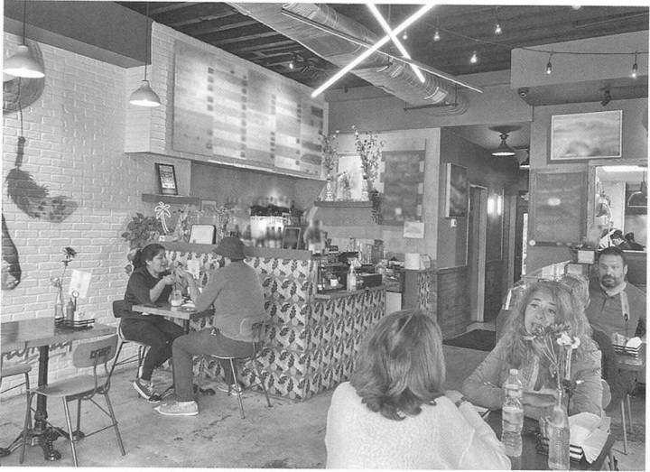
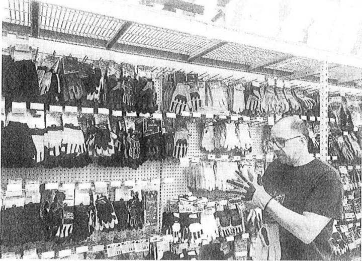
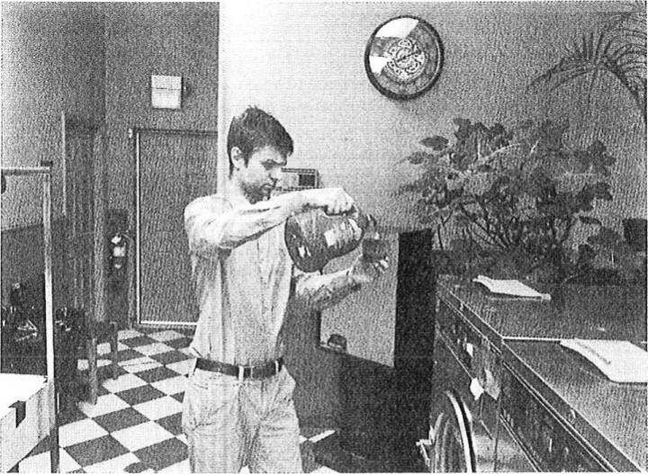
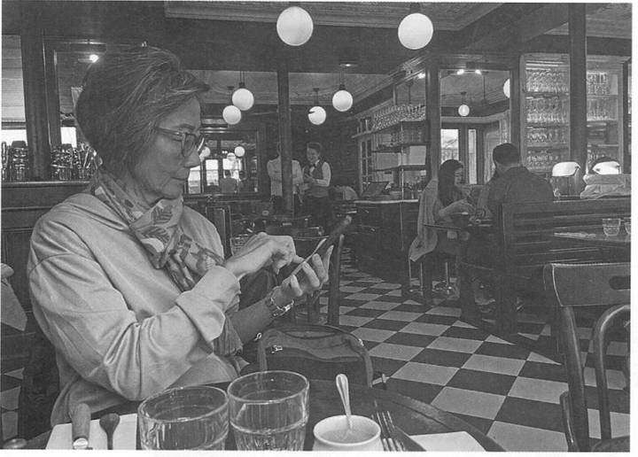

Listening Unit 1: Accommodation & Restaurant
Lesson 2 – Listening Part 1 (Basic Information & Strategies)
Khởi động: Spot the Trap! Mỗi bức tranh có 3 câu mô tả; em phải tìm thật nhanh câu không đúng với tranh. Đây là cách luyện bắt bẫy (trap) của Part 1. Ví dụ câu trên slide:
Spot the Trap = Tìm ra cái bẫy. Câu bẫy thường nhắc đúng người, đúng đồ vật trong tranh nhưng sai một chi tiết nhỏ (sai hành động, sai đồ vật, sai màu…). |
1. Từ vựng chủ đề nhà hàng (Vocabulary)
Bài nghe điền từ (Exercise 1) là hội thoại giữa khách hàng (customer) và bồi bàn (waiter) trong nhà hàng. Các từ cần nhớ: napkin, countertop, wipe off, serve, silverware, light fixture, clear away, utensils, cashier.
Excuse me, can I ask for a napkin? (Xin lỗi, cho tôi xin một chiếc khăn ăn được không?)
I accidentally spilled some sauce on the countertop. (Tôi lỡ làm đổ nước sốt lên mặt bàn.)
Let me quickly wipe off the sauce for you. (Để tôi lau sạch nước sốt cho anh/chị.)
Could you please serve me the menu? (Bạn đưa giúp tôi thực đơn được không?)
I'll make sure your silverware is set up before your meal is served. (Tôi sẽ bày sẵn dao, muỗng, nĩa trước khi mang món ra.)
The light fixture above my table seems to be flickering. (Cái đèn phía trên bàn tôi hình như đang chập chờn.)
May I clear away your plate and utensils? (Tôi dọn đĩa và dụng cụ ăn của anh/chị nhé?)
Let me take your bill from the cashier. (Để tôi lấy hoá đơn ở quầy thu ngân.)
1.1. Đọc lại hội thoại và trả lời câu hỏi (Exercise 2)
| Câu hỏi | Trả lời |
|---|---|
| What does the customer ask for? (Khách hàng xin cái gì?) |
The customer asks for a napkin. → Khách hàng xin một chiếc khăn ăn. |
| Where does the customer spill some sauce? (Khách làm đổ nước sốt ở đâu?) |
The customer spills some sauce on the countertop. → Khách hàng làm đổ nước sốt lên mặt bàn. |
| Which dishes does the customer request? (Khách gọi những món gì?) |
The customer requests grilled salmon with mashed potatoes and a fork and knife. → Khách hàng gọi cá hồi nướng với khoai tây nghiền, và xin một bộ dao nĩa. |
| What should be set up before the meal? (Cần bày sẵn gì trước bữa ăn?) |
The silverware should be set up before the meal. → Dao, muỗng, nĩa cần được bày sẵn trước bữa ăn. |
| What happens to the light fixture? (Cái đèn bị làm sao?) |
The light fixture above the table seems to be flickering. → Cái đèn phía trên bàn hình như đang chập chờn. |
2. Thông tin cơ bản về Part 1 (Exam Focus)
Part 1 là phần mô tả tranh: em nhìn một bức ảnh trong đề, nghe 4 câu mô tả và chọn câu mô tả đúng nhất. Các câu mô tả không in trong đề và chỉ đọc một lần.
| Thông tin | Chi tiết |
|---|---|
| Số câu hỏi (Number of questions) | 6 câu |
| Số đáp án (Number of answers) | 4 lựa chọn (A, B, C, D) |
| Cách làm (Directions) | Nghe 4 câu mô tả về bức tranh, chọn câu mô tả đúng nhất rồi tô vào phiếu trả lời. |
2.1. Thống kê chủ đề (Topic Probability)
| Chủ đề | Xác suất | Các từ khoá hay gặp |
|---|---|---|
| At public places (Nơi công cộng) | 100% | restaurants, hospitals, post offices, travel, real estate agencies |
Chủ đề "Accommodation & Restaurant" nằm trong vùng kiến thức "At public places", xuất hiện với tần suất rất cao trong TOEIC.
2.2. Ma trận dạng câu hỏi (Question Type Matrix)
| Dạng tranh | Xác suất | Kiểm tra khả năng |
|---|---|---|
| Photos of people (tranh có người) | 70% | Nhận diện hành động (actions). |
| Photos of objects / scenes (tranh đồ vật / cảnh vật) | 30% | Mô tả vị trí, trạng thái, bố cục. |
3. Chiến lược Part 1: SEA (Strategies)
Khi tranh hiện ra, em quét nhanh bức tranh theo 3 bước S – E – A (Settings – Entity – Activities):
| Bước | Việc cần làm | Ví dụ trên slide |
|---|---|---|
| S – Setting (bối cảnh) | Nhận diện bối cảnh của bức ảnh. | a train station (nhà ga tàu) ticket counter area (khu quầy bán vé) |
| E – Entity (đối tượng) | Xác định các đối tượng / chủ thể trong ảnh. | people / they / women and men (mọi người / họ / phụ nữ và đàn ông) suitcases and bags (va li và túi xách) |
| A – Activities (hành động) | Dự đoán các hành động đang xảy ra trong ảnh. | standing in line (đứng xếp hàng) looking at the counter (nhìn về phía quầy) talking and looking at each other (nói chuyện và nhìn nhau) |
Ví dụ áp dụng SEA (Track 2) Tranh: nhà ga, mọi người đang xếp hàng ở quầy vé. Chọn câu mô tả đúng nhất: (A) They are watching a movie. · (B) They are standing in line. · (C) They are boarding a train. · (D) A woman is paying for an item. Đáp án đúng: (B) (Họ đang đứng xếp hàng.) Vì sao các câu kia sai:
|
3.1. Các mẫu câu mô tả tranh hay gặp (Common Structures)
| Mẫu câu | Dùng khi | Ví dụ |
|---|---|---|
| S + is / are + V-ing (hiện tại tiếp diễn) | Tranh có người: tả người đó đang làm gì. | She's signing a receipt. (Cô ấy đang ký hoá đơn.) |
| S + is / are being + V3 (bị động tiếp diễn) | Đồ vật đang được ai đó làm gì: trong tranh phải có người đang làm. | A table is being set for a meal. (Bàn đang được bày cho bữa ăn.) |
| S + is / are + V3 hoặc has / have been + V3 | Đồ vật ở sẵn trạng thái đó / đã được làm xong: không cần người. | Chairs have been arranged around a table. (Ghế đã được xếp quanh bàn.) |
| There is / are + N (+ nơi chốn) | Tranh đồ vật / cảnh vật: nói có cái gì ở đâu. | There is a bench by the river. (Có một băng ghế cạnh bờ sông.) |
| S + is / are + nơi chốn | Nói vị trí của đồ vật. | A light fixture is hanging above the table. (Một chiếc đèn đang treo phía trên bàn.) |
V-ing = động từ thêm -ing; V3 = quá khứ phân từ (cột 3 bảng động từ bất quy tắc, ví dụ: set → set → set, arrange → arranged); S = chủ ngữ; N = danh từ.
3.2. Các bẫy thường gặp ở Part 1 (Part 1 Traps)
Câu sai ở Part 1 thường nghe rất "dính" tới bức tranh nhưng sai một chi tiết nhỏ. Đây là các bẫy hay gặp nhất:
| Loại bẫy | Ví dụ câu bẫy | Cách tránh |
|---|---|---|
| Đúng từ, sai hành động | Tranh: người đàn ông đã đeo kính sẵn. ✗ He's putting on his glasses. (Anh ấy đang đeo kính vào.) ✓ He's wearing glasses. (Anh ấy đang đeo kính.) |
Đúng người, đúng đồ vật chưa đủ: kiểm tra lại động từ. wearing = đang mặc / đeo sẵn; putting on = đang làm động tác mặc / đeo vào. |
| is being + V3 hay has been + V3 | Tranh: phòng họp trống, ghế xếp quanh bàn. ✗ Chairs are being arranged. (Ghế đang được xếp.) ✓ Chairs have been arranged. (Ghế đã được xếp sẵn.) |
Nghe being → tìm người đang làm việc đó. Không có người → loại. |
| Từ nghe giống nhau | Tranh: một chiếc ly (glass) trên bàn. ✗ The grass is being cut. (Cỏ đang được cắt.) Các cặp khác: working / walking, copies / coffee, ladder / letter. |
Nghe thấy từ na ná tên đồ vật trong tranh → đừng chọn vội, nghe hết câu rồi so lại với tranh. |
| Một từ, hai nghĩa | watch: đồng hồ / xem; sign: biển báo / ký tên; board: tấm bảng / lên (tàu, xe); plant: cây / nhà máy. | Xem từ đó đứng ở vị trí động từ hay danh từ trong câu để hiểu đúng nghĩa. |
| Người / vật không có trong tranh | Tranh: một người đàn ông đang đọc thực đơn. ✗ He's ordering from a server. (Anh ấy đang gọi món với người phục vụ.) → không thấy người phục vụ. |
Câu có một người hoặc đồ vật em không nhìn thấy → loại ngay. |
| Sai đồ vật / sai vị trí | ✓ A lamp is next to some books. (Đèn ở cạnh mấy cuốn sách.) ✗ A lamp is on top of some books. (Đèn ở trên mấy cuốn sách.) |
Nghe đến hết câu: tân ngữ và giới từ vị trí (on, under, next to, behind…) cũng phải đúng. |
| Suy diễn quá mức | Tranh: hai người đứng trên vỉa hè. ✗ They're waiting for a bus. (Họ đang đợi xe buýt.) → tranh không chứng minh được. |
Part 1 chỉ tả cái mắt nhìn thấy. Cẩn thận với: is about to (sắp), getting ready to (chuẩn bị), waiting for (đang đợi). |
💡 Mẹo nghe: bắt động từ + danh từ chính Mỗi câu mô tả chỉ cần nghe rõ 2 chỗ: động từ (đang làm gì?) và danh từ chính (làm với cái gì?). Cả hai phải khớp với tranh thì câu mới đúng. Ví dụ: He is clearing away some utensils. → động từ clearing away (dọn đi) + danh từ utensils (dụng cụ ăn uống). Nếu tranh có dụng cụ ăn nhưng anh ấy đang rửa chứ không phải dọn → câu sai. Khi nghe, đánh dấu ngay từng câu: O (đúng), X (sai), △ (chưa chắc). Không có câu O thì chọn câu △ hợp lý nhất, đừng bỏ trống. |
3.3. Có thấy hành động thì mới chọn (See the action)
Câu Part 1 có động từ hành động (serving, paying, pouring…) chỉ đúng khi trong tranh nhìn thấy rõ người đó đang làm việc ấy. Tranh có nhà hàng, có đồ ăn, có tiền… chưa đủ. Xem từng cặp tranh dưới đây: ô xanh chọn được, ô đỏ phải loại.
🍽️ serving food: phải thấy người phục vụ mang đồ ăn tới bàn cho khách

💳 paying (for): phải thấy tiền, thẻ hoặc điện thoại đang được đưa cho nhân viên

📝 taking an order: phải thấy nhân viên cầm sổ/máy ghi món, đứng cạnh bàn khách
🫖 pouring: phải thấy nước đang chảy từ bình/chai vào ly


Bảng kiểm tra nhanh: nghe động từ nào thì mắt phải tìm thấy gì trong tranh.
| Nghe thấy | Trong tranh phải thấy |
|---|---|
| serving (food) | Người phục vụ cầm đồ ăn đưa tới bàn / đặt trước mặt khách |
| paying (for) | Tiền, thẻ, điện thoại đang đưa cho nhân viên, thường ở quầy thu ngân |
| taking an order | Nhân viên cầm sổ / máy ghi, đứng cạnh bàn khách |
| ordering (food) | Khách đang nói / chỉ vào thực đơn với nhân viên |
| pouring | Nước đang chảy từ bình, chai vào ly |
| clearing (a table) | Đang cầm đĩa, ly bẩn dọn khỏi bàn |
| setting (a table) | Đang bày đĩa, dao nĩa lên bàn |
| reading a menu | Đang cầm và nhìn vào thực đơn |
| eating / dining | Đang đưa thức ăn lên miệng, cầm dao nĩa, đũa |
Ảnh minh hoạ: Unsplash (miễn phí); ảnh ghi "Câu thật" lấy từ đề ETS trên web luyện TOEIC.
4. Luyện tập Part 1 (Practice)
4.1. Exercise 1: Viết ra những gì em thấy trong ảnh (dùng SEA)
| Ảnh | Gợi ý (Possible answers) |
|---|---|
| 1 | Woman, man, laptop, reception desk (quầy lễ tân), pen, … |
| 2 | People, table, menu (thực đơn), … |
| 3 | Diners (thực khách), buffet (tiệc tự chọn), food, fork (nĩa), … |
| 4 | Man, utensils (dụng cụ ăn uống), food, … |
| 5 | Light fixtures (đèn), tables, chairs, glasses (ly), utensils, windows, … |
| 6 | Waiter (bồi bàn), table, food, napkin (khăn ăn), utensils, … |
4.2. Exercise 2: Nghe và chọn câu mô tả đúng (Track 4)
Các câu mô tả đúng (theo Answer Key):
1. (C) She's signing a receipt. (Cô ấy đang ký hoá đơn.)
2. (D) The people are looking at some menus. (Mọi người đang xem thực đơn.)
3. (C) Diners are helping themselves to the buffet. (Thực khách đang tự lấy đồ ăn ở quầy buffet.)
4. (D) He is clearing away some utensils. (Anh ấy đang dọn dụng cụ ăn uống.)
5. (D) A light fixture is hanging above the table. (Một chiếc đèn đang treo phía trên bàn.)
6. (B) A table is being set for a meal. (Bàn đang được bày để chuẩn bị bữa ăn.)
📌 Lưu ý từ bài luyện tập Câu 1–4 tả người đang làm gì (S + is / are + V-ing). Câu 5 tả vị trí đồ vật (đèn treo phía trên bàn). Câu 6 dùng is being set (đang được bày): dạng này chỉ đúng khi trong tranh có người đang làm việc đó (ở ảnh 6 có người phục vụ). Gặp tranh không có người mà nghe is being + V3 thì hầu như là câu sai. |
TOEIC trong đời sống (TOEIC in Real Life) Từ vựng: gọi tên đồ vật, khu vực, nội thất, dịch vụ trong nhà hàng, khách sạn; mô tả hoạt động như phục vụ món ăn, dọn bàn, lau quầy, thanh toán. Mô tả tình huống bằng SEA: nói theo thứ tự từ tổng quan đến chi tiết: Setting (nhà hàng, quầy lễ tân…) → Entity (nhân viên, khách, bàn ăn, thực đơn…) → Activities (phục vụ, lau bàn, xếp hàng, thanh toán…). |
5. Tổng kết (Review)
| Nội dung | Ghi nhớ |
|---|---|
| Từ vựng | napkin, countertop, wipe off, serve, silverware, light fixture, clear away, utensils, cashier. |
| Part 1 | 6 câu, mỗi câu 4 đáp án; nghe một lần, câu mô tả không in trong đề. |
| Dạng tranh | Photos of people (70%): hành động; Photos of objects / scenes (30%): vị trí, trạng thái, bố cục. |
| Chủ đề | At public places (100%): restaurants, hospitals, post offices, travel, real estate agencies. |
| Chiến lược SEA | Setting (bối cảnh) → Entity (đối tượng) → Activities (hành động). |
| Bẫy Part 1 | Đúng từ sai hành động; is being (có người đang làm) vs has been (đã xong); từ nghe giống; người / vật không có trong tranh; sai vị trí; suy diễn quá mức. |
Bảng từ vựng (Vocabulary Sheet)
Từ vựng trong bài, lấy từ bảng Glossary trên slide của bài này (Word – Part of Speech – Pronunciation – Vietnamese). Answer Key của bài không có bảng từ vựng.
| Word | Part of Speech | Pronunciation | Vietnamese |
|---|---|---|---|
| napkin | Noun | /ˈnæp.kɪn/ | Khăn ăn |
| countertop | Noun | /ˈkaʊn.tə.tɒp/ | Mặt bàn (bếp, quầy) |
| wipe off | Phrasal verb | /waɪp ɒf/ | Lau sạch, lau đi |
| serve | Verb | /sɜːv/ | Phục vụ, đưa/mang ra |
| silverware | Noun | /ˈsɪl.və.weər/ | Bộ dao, muỗng, nĩa (bằng kim loại) |
| light fixture | Noun phrase | /ˈlaɪt fɪks.tʃər/ | Đèn chùm, thiết bị chiếu sáng gắn cố định |
| clear away | Phrasal verb | /klɪər əˈweɪ/ | Dọn dẹp, dọn đi |
| utensils | Noun | /juːˈten.səlz/ | Dụng cụ, đồ dùng (nhà bếp/ăn uống) |
| cashier | Noun | /kæˈʃɪər/ | Nhân viên thu ngân / Quầy thu ngân |